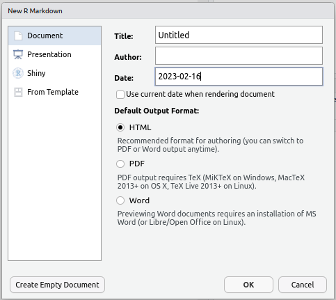

?PlantGrowthR Markdown
BODL R Training
Dr Stevie Pederson
Black Ochre Data Labs
Telethon Kids Institute
February 16, 2023
R Markdown
Writing Reports Using rmarkdown
rmarkdownis a cohesive way to- Load & wrangle data
- Analyse data, including figures & tables
- Publish everything in a complete report/analysis
- Everything is one document
- Our analysis code embedded alongside our results
- The package
knitris the engine behind this- Replaced the
Sweavepackage about 8-10 years ago
- Replaced the
Extends the markdown language to incorporate R code
A Brief Primer on Markdown
- Markdown is a very simple and elegant way to create formatted HTML
- Text is entered as plain text
- Formatting usually doesn’t appear on screen (but can)
- The parsing to HTML often occurs using
pandoc
- Often used for Project README files etc
- Not R-specific but is general across data-science
- Go to the File drop-down menu in RStudio
- New File -> Markdown File
- Save As
README.md
Editing Markdown
- Section Headers are denoted by on or more
#symbols#is the highest level,##is next highest etc
- Italic text is set by surrounding text in asterisks (
*) or underscores (_)
- Bold text is set by using two asterisks (
**) or two underscores )__
- Dot-point Lists are started by prefixing each line with
-- Next level indents are formed by adding 2 or 4 spaces before the next
-
- Next level indents are formed by adding 2 or 4 spaces before the next
- Numeric Lists are formed by starting a line with
1.- Subsequent lines don’t need to be numbered in order
- Lower level values work as above
Editing Markdown
Let’s quickly edit our file so there’s something informative
Enter this on the top line
# BODL R Training, Feb 16-17 2020
Two lines down add this
## Day 1
Leave another blank line then add
1. Introduction to R and R Studio
2. Data Manipulation
3. Data Visualisation
4. R Markdown
Editing Markdown
Underneath the list enter:
**All material** can be found at [the main github repository](https://github.com/black-ochre-data-labs/bodl-intro-r-20220216)
- Here we’ve set the first two words to appear in bold font
- The section in the square brackets will appear as text with a hyperlink to the site in the round brackets
- Click the
Preview Buttonand an HTML document appears - Note that README.html has also been produced
- Sites like github/gitlab render this automatically
- Obsidian also renders interactively
R Markdown
Writing Reports Using rmarkdown
We can output our analysis directly as:
- HTML
- MS Word Documents
- PDF Documents (If you have \(\LaTeX\) installed)
- Slidy,
ioslidesor PowerPoint presentations
We never need to use MS Word, Excel or Powerpoint again!
Writing Reports Using rmarkdown
- The file suffix is
.Rmd - Include markdown alongside embedded
Rcode. - Create all of our figures & tables directly from the data
- Data, experimental and analytic descriptions
- Mathematical/Statistical equations
- Nicely Formatted Results
- Any other information: citations, hyperlinks etc
Creating an R Markdown document
Let’s create our first rmarkdown document
- Go to the
Filedrop-down menu in RStudio - New File -> R Markdown…

Creating an R Markdown document
- Change the Title to: My First Report
- Change the Author to your preferred name
- Leave everything else as it is & hit OK
- Save the file as
RMarkdownTutorial.Rmd
Looking At The File
A header section is contained between the --- lines at the top
- Nothing can be placed before this!
- Uses YAML (YAML Ain’t Markup Language)
- Editing is beyond the scope of this course
- Can set custom
.cssfiles, load LaTeX packages, set parameters etc.
Looking At The File
Lines 8 to 10 are a code chunk
- Chunks always begin with ```{r}
- Chunks always end with ```
- Executed
Rcode goes between these two delineators - Chunk names are optional and directly follow the letter
r- Chunks can also be other languages (
bash,pythonetc) - Here the
rtells RMarkdown the chunk is anRchunk
- Chunks can also be other languages (
- Other parameters are set in the chunk header, e.g. do we show/hide the code
Looking At The File
Line 12 is a Subsection Heading, starting with ##
- Click the Outline symbol in the top-right of the Script Window to open the document outline
- Chunk names are shown in italics (if set to be shown)
Tools>Global Options>R Markdown- Show in document outline: Sections and All Chunks
- Section Names in plain text
- Chunks are indented within Sections
- By default Sections start with
##- Only the Document Title should be Level 1
#
- Only the Document Title should be Level 1
Getting Help
Check the help for a guide to the syntax.
Help > Markdown Quick Reference
- Increasing numbers of
#gives Section->Subsection->Subsubsection etc. - Bold is set by **Knit** (or __Knit__)
- Italics can be set using a single asterisk/underline: *Italics* or _Italics_
Typewriter fontis set using a single backtick `Typewriter`
Compiling The Report
The default format is an html_document & we can change this later. Generate the default document by clicking Knit
Compiling The Report
The Viewer Pane will appear with the compiled report (probably)
- Note the hyperlink to the RMarkdown website & the bold typeface for the word Knit
- The R code and the results are printed for
summary(cars) - The plot of
temperatureVs.pressurehas been embedded - The code for the plot was hidden using
echo = FALSE
Compiling The Report
- We could also export this as an MS Word document by clicking the small ‘down’ arrow next to the word Knit.
- By default, this will be Read-Only, but can be helpful for sharing with collaborators.
- Saving as a
.PDFmay require an installation of \(\LaTeX\), so we’ll ignore that for now.
Making Our Own Report
Making Our Own Report
Now we can modify the code to create our own analysis.
- Delete everything in your R Markdown file EXCEPT the header
- We’ll analyse the
PlantGrowthdataset which comes withR - First we’ll need to describe the data
Rename the report
First we should change the title of the report to something suitable, e.g. The Effects of Two Herbicide Treatments on Plant Growth
Create a “Data Description” Section
Now let’s add a section header for our analysis to start the report
- Type
# Data Descriptionafter the header and after leaving a blank line - Use your own words to describe the data
Create a Data Description" Section My example text: > Plants were treated with two different herbicides and the effects on growth were compared using the dried weight of the plants after one month. Both treatments were compared to a control group of plants which were not treated with any herbicide. Each group contained 10 plants, giving a total of 30 plants. ## Create aData Description” Section
Hopefully you mentioned that there were 10 plants in each group, with a total of 30.
Can we get that information from the data itself?
Create a Data Description" Section We know that the code `nrow(PlantGrowth)` would give the total number of samples. __We can embed this in our data description!__ 1. Instead of the number 30 in your description, enter \r\
- Compile the HTML document.
Loading R packages
- Before the Data Description header, add a new header called
Setup - Create a code chunk with the contents
library(tidyverse). - Recompile the HTML
Hint: You can create an empty code chunk using Ctrl+Alt+I
This has loaded the tidyverse packages for the whole document. All subsequent code chunks can use any functions in the package.
Loading R packages
Notice that this gave us an overly informative message. We can turn this off:
- After the
rat the start of the code chunk, add a comma - Start typing the word
messageand use the auto-complete feature to setmessage = FALSE - Recompile
Writing the Report
After our description, we could also have a look at the data in a summary. Add the following in a code chunk.
(Recompile…)
Formatting Tables
To change this table into a nicely formatted one:
- Load
panderinto the workspace - Use the function
pander
In the Setup section, on the line after loading tidyverse enter:
Formatting Tables
Then head back to the code chunk and add the following.
(Recompile…)
Using pander
The package pander is great for formatting R output.
Add the following line to your data description:
“The three groups are classified as `
rpander(levels(PlantGrowth$group))`” (We’ll explain this bit of code tomorrow)
Add a plot of the data
- Create a plot using
geom_boxplot() - Fill the boxes based on the
groupvariable

Analyse the data
Here we can fit a simple linear regression using:
weightas the response variablegroupas the predictor variable
To fit a linear model in R:
- Use the function
lm() - Save the results as a new object
Analyse the data
We can view the summary() or anova() for a given model using
Analyse the data
To place these as formatted tables in the text we can use pander()
You can change the default captions if you like
Add Some Diagnostic Plots
In the chunk header add:
echo=FALSE, fig.show='hold', fig.width = 6, fig.cap = "Diagnostic plots for model fit"
(Try using tab auto-complete to speed that up)
Finishing the analysis
After you’re happy with the way your analysis looks
- A good habit is to finish with a section called
Session Info - Add a code chunk which calls the R command
sessionInfo()
So far we’ve been compiling everything as HTML, but let’s switch to an MS Word document. We could email this to our supervisors, or upload to Google docs for collaborators…
Summary
This basic process is incredibly useful
- We never need to cut & paste anything between R and other documents
- Every piece of information comes directly from our R analysis
- We can very easily incorporate new data as it arrives
- Creates reproducible research
- Highly compatible with collaborative analysis & version control (Git)